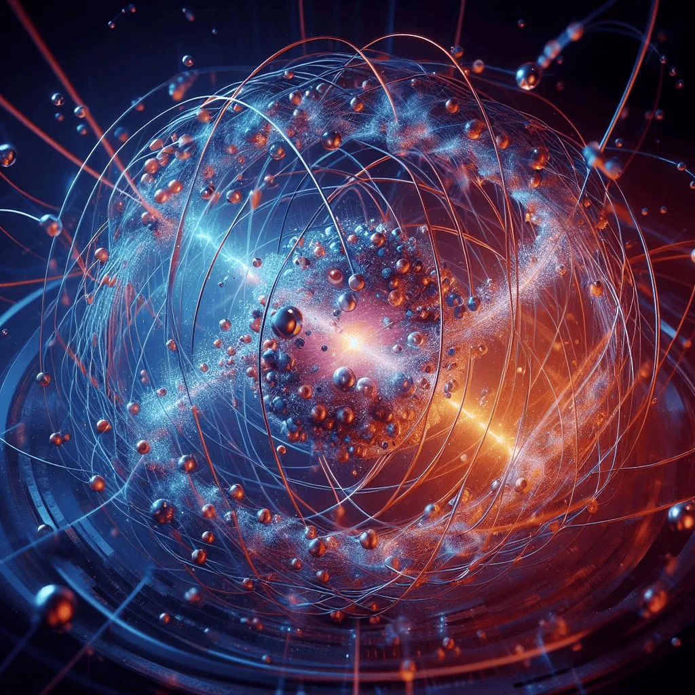

今日要闻
1.量子力学取得突破性进展
宏观量子效应的实证 2025年诺贝尔物理学奖授予约翰·克拉克、米歇尔·德沃雷和约翰·马丁尼斯，表彰他们实现的“宏观量子隧穿”与“能量量子化”实验突破。该团队在超导电路中首次观测到由数十亿粒子组成的宏观系统表现出量子叠加态，为超导量子计算奠定了物理基础。中国学者于扬、游建强通过优化量子比特结构，将相干时间提升至毫秒级，直接推动了谷歌、IBM等企业的量子处理器发展。

高阶拓扑相的量子模拟 中国科学技术大学潘建伟团队基于“祖冲之二号”超导量子处理器，在6×6量子比特阵列中首次实现并探测到高阶非平衡拓扑相。该成果突破了传统拓扑物态的体-边对应关系，为拓扑量子计算提供了新路径。
2.量子计算突破新高度
根据发表于《自然》杂志的研究，加州理工学院与谷歌团队利用“悬铃木”量子处理器构建了9量子比特的微观虫洞模型，通过量子纠缠实现了量子态的跨系统传递，验证了全息原理在调和量子力学与广义相对论中的可行性。
3.行业数据
| 领域 | 投资额(亿美元) | 增长率 |
|---|---|---|
| 人工智能 | 1000 | 10% |
| 量子计算 | 500 | 20% |
| 5G网络 | 800 | 15% |
| 区块链 | 600 | 12% |
| 虚拟现实 | 700 | 18% |
| 增强现实 | 900 | 25% |
4.读者互动
您最关注的领域是?
留下您的观点: